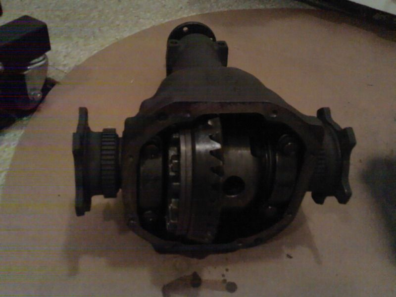

-
I am flipping through the FSM (1986) in the propeller shaft & differential carrier (Page PD-31).
It has two different torque values for the nonturbo and turbo cars for the ring gear bolts.
Nonturbo (VG30E) : 51-58 Ft-lbs
Turbo (VG30ET) : 98-112 Ft-lbs
I was under the impression that the ring gear and bolts were all interchangeable for long-nose R200s. With the same components, why are the torque values so different? It makes sense that the turbo (higher HP) cars need to be tighter, but if the bolts can take 98-112 Ft-lbs, why not just have all the R200s tighten to that spec? -
at the time of printing, perhaps the non turbo used 10mm bolts and the turbo used 12mm bolts. -
Does that mean that they actually use the same bolts now? *first time taking apart R200*
Which torque spec should I use? -
I personally would use the higher of the two. AS Careless said, 84/85's had 10mm ring gear bolts which may have limited their toque values.
-
If it is a 10mm bolt, use the lower of the 2.
If it is a 12mm bolt, use the higher of the 2.
Using the higer spec on the 10mm bolt is just asking to break the bolt, or strip the threads. That would be disaster in a high torque load like a diff.
1986 300ZX Turbo…sold
1990 Skyline GT-R…new money pit
2014 Juke Nismo RS 6-speed…daily -
Got it. Thanks!
One last thing since I've got the experts' attention. The FSM says to use a threadlocking compound for the ring gear bolts and the mating surface between the ring gear and the diff. Any ideas which strength threadlocker to use? I was guessing the locktite blue (medium strength). -

80lbs with red loctite when I did the VLSD swap.Cha iro
enjoy building it yourself.
if it fails, fuck it.
at least you gave it a whirl. -
You might try the differential service manual
http://www.xenonz31.com/files/Z31%20R20 … ted%20Slip).pdfMy ride: 1984 300ZXT Anniversary Edition, SCCA BSP
See: http://z31performance.com/showthread…ight=vegasz31t -
That is the same document that I am asking a question about. We are referencing the same thing.vegasZ31T wrote: You might try the differential service manual
http://www.xenonz31.com/files/Z31%20R20 … ted%20Slip).pdf -
http://www.cncexpo.com/MetricBoltTorque.aspx
Metric has specified torque ranges for all bolt sizes, the above posts are correct stating the M10's should have the lower figure.. the confusion is not all years/models seem to have consistent ring gear/bolt types -
Sorry, you said the 86 FSM. This is a bit different.
Anyhow best of luck.My ride: 1984 300ZXT Anniversary Edition, SCCA BSP
See: http://z31performance.com/showthread…ight=vegasz31t -
Ah, you are correct. These two are NOT the same document but very similar. They are the same until page 30.vegasZ31T wrote: Sorry, you said the 86 FSM. This is a bit different.
Anyhow best of luck.
The document you posted has one additional section for the Limited slip Differential. I am guessing that the page you posted is taken from the propeller shaft and differential carrier section of a 87-89 FSM since it covers the LSD part too.
However, both documents show the two differing torque values (PD31 in the 86FSM and PD39 in the document you posted).
I will measure the bolts and go from there. Thanks everyone! -
You might also check out the other material on the "Reference" page on http://www.xenonz31.com.My ride: 1984 300ZXT Anniversary Edition, SCCA BSP
See: http://z31performance.com/showthread…ight=vegasz31t -
Alright guys,
I have a new problem but it is related so I will post it up here.
The ring gear bolts are completely stuck from a used LSD I bought. It's from a 240sx, so I have to remove the ring gear so I can use my own ring gear.
I tried both a huge breaker bar and an impact gun. Didn't budge… any ideas?? I am currently dripping acetone on the bolts in an effort to dissolve any loctite there (and hoping that's the reason why they aren't coming off). -
Try some heat? And just to make sure,you do know they are RIGHT hand thread,correct?"If your car cant do a burnout from a 60mph rolling start, then your engine needs more work."
"Nitrous doesn't blow up motors; Idiots with nitrous blow up motors."
Shooting for 500whp


Copyright © 2006–. All rights reserved. Privacy Policy